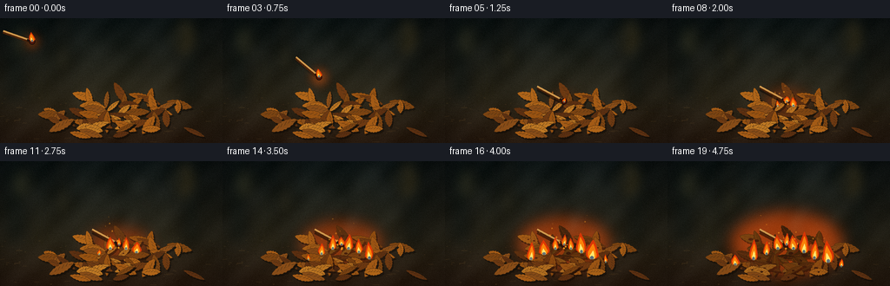
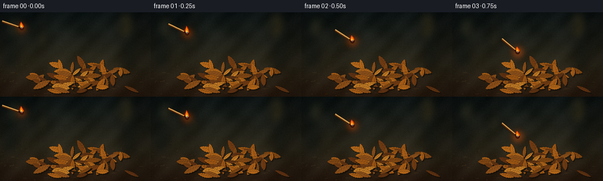

CODING AGENTS AS PIXEL WORLD MODELS
traex/GPT-5.6-Sol · phygen_142
点击播放 · 原生 RGB 像素
逐轮保存的候选
回放视频、检查图与代码变化。
每份候选均可单独播放。实际图片检查记录在下方工具轨迹中。
候选 01播放与检查图
点击播放 · 原生 RGB 像素


展开代码变化
--- 上一保存版本
+++ 本次保存版本
@@ -0,0 +1,256 @@
+from pathlib import Path
+import json, math
+import numpy as np
+from PIL import Image, ImageDraw, ImageFilter
+import artifact_io
+
+CASE_DIR = Path(__file__).resolve().parent
+SPEC = json.loads((CASE_DIR / 'task_spec.json').read_text())
+W, H, N = SPEC['width'], SPEC['height'], SPEC['frames']
+S = 3
+SW, SH = W*S, H*S
+rng = np.random.default_rng(142)
+
+# Fixed scene texture and geometry.
+Y, X = np.mgrid[0:SH, 0:SW]
+base_noise = rng.normal(0, 1, (SH, SW))
+# A soft, shadowed woodland background and earthy foreground.
+top = np.array([15, 24, 24.], dtype=float)
+mid = np.array([47, 42, 28.], dtype=float)
+ground = np.array([47, 31, 18.], dtype=float)
+base = np.empty((SH, SW, 3), dtype=float)
+for y in range(SH):
+ yy = y / SH
+ if yy < .63:
+ q = yy/.63
+ col = top*(1-q) + mid*q
+ else:
+ q = (yy-.63)/.37
+ col = mid*(1-q) + ground*q
+ base[y, :, :] = col
+# Patchy soil shadows plus fine natural grain.
+soil = 3.6*np.sin(X/39 + np.sin(Y/31)) + 2.2*np.sin((X+Y)/17)
+base += soil[...,None] + 2.4*base_noise[...,None]
+# Vignette.
+dx=(X-SW*.5)/(SW*.62); dy=(Y-SH*.52)/(SH*.70)
+base *= np.clip(1-.38*(dx*dx+dy*dy), .55, 1)[...,None]
+base = np.clip(base,0,255).astype(np.uint8)
+
+# Blurred trunks and bokeh in the distant background.
+background = Image.fromarray(base, 'RGB').convert('RGBA')
+bg = Image.new('RGBA',(SW,SH),(0,0,0,0)); d=ImageDraw.Draw(bg,'RGBA')
+for x, wid, color in [(18,25,(8,16,15,125)),(72,16,(30,27,18,80)),(220,24,(13,18,16,120)),(246,11,(25,23,17,85))]:
+ d.rectangle(((x-wid/2)*S,-10*S,(x+wid/2)*S,96*S), fill=color)
+for x,y,r,c in [(31,26,11,(121,111,58,22)),(205,22,15,(183,140,62,18)),(169,50,8,(160,118,57,18)),(72,45,6,(202,162,81,13))]:
+ d.ellipse(((x-r)*S,(y-r)*S,(x+r)*S,(y+r)*S), fill=c)
+bg=bg.filter(ImageFilter.GaussianBlur(8*S))
+background=Image.alpha_composite(background,bg)
+# Ground pebbles and scratches.
+fixed_detail=Image.new('RGBA',(SW,SH),(0,0,0,0)); dd=ImageDraw.Draw(fixed_detail,'RGBA')
+for _ in range(95):
+ x=float(rng.uniform(0,W)); y=float(rng.uniform(88,H)); r=float(rng.uniform(.25,1.25))
+ c=(105,78,39,int(rng.uniform(25,75))) if rng.random()<.55 else (18,14,10,int(rng.uniform(30,90)))
+ dd.ellipse(((x-r)*S,(y-r*.45)*S,(x+r)*S,(y+r*.45)*S), fill=c)
+for _ in range(24):
+ x=float(rng.uniform(0,W)); y=float(rng.uniform(103,H)); ln=float(rng.uniform(2,9))
+ dd.line((x*S,y*S,(x+ln)*S,(y+rng.uniform(-1,1))*S),fill=(155,112,53,34),width=1*S)
+background=Image.alpha_composite(background,fixed_detail)
+
+# Leaf records, laid back-to-front. Most leaves form an obvious central pile.
+leaf_colors=[(124,68,18),(153,83,18),(176,101,25),(109,57,18),(191,121,36),(137,77,24),(91,47,17),(164,91,22)]
+leaves=[]
+# Back row / mound.
+for i in range(47):
+ theta=rng.uniform(0,2*math.pi)
+ rad=math.sqrt(rng.random())
+ x=137 + math.cos(theta)*rad*81
+ y=103 + math.sin(theta)*rad*24 + 7*rad
+ length=rng.uniform(15,31); width=rng.uniform(5,10)
+ ang=rng.uniform(-42,42) if rng.random()<.72 else rng.uniform(55,125)
+ leaves.append(dict(x=x,y=y,L=length,w=width,a=ang,c=leaf_colors[i%len(leaf_colors)],phase=rng.uniform(0,6.28)))
+# Some foreground leaves establish depth.
+for i in range(13):
+ x=rng.uniform(48,225); y=rng.uniform(119,140)
+ leaves.append(dict(x=x,y=y,L=rng.uniform(17,34),w=rng.uniform(5,10),a=rng.uniform(-28,28),c=leaf_colors[(i+3)%len(leaf_colors)],phase=rng.uniform(0,6.28)))
+leaves.sort(key=lambda z:z['y'])
+
+def leaf_polygon(cx,cy,L,w,ang, curled=0.0):
+ # Serrated, tapered dry leaf silhouette around a curved center axis.
+ pts=[]
+ ca=math.cos(math.radians(ang)); sa=math.sin(math.radians(ang))
+ for side in (1,-1):
+ seq=np.linspace(-.5,.5,15) if side==1 else np.linspace(.5,-.5,15)
+ for j,u in enumerate(seq):
+ envelope=max(0, math.sin(math.pi*(u+.5)))**.72
+ serr=1 + .13*math.sin((j*math.pi)) + .09*(1 if j%2 else -1)
+ off=side*w*.5*envelope*serr
+ bend=curled*(u*u-.25)*8
+ px=u*L; py=off+bend
+ pts.append(((cx+px*ca-py*sa)*S,(cy+px*sa+py*ca)*S))
+ return pts
+
+def draw_leaf(layer, leaf, frame, fire_p):
+ d=ImageDraw.Draw(layer,'RGBA')
+ cx,cy,L,w,a=leaf['x'],leaf['y'],leaf['L'],leaf['w'],leaf['a']
+ dist=math.hypot(cx-137,(cy-98)*1.5)
+ exposure=max(0, fire_p*88-dist)/58
+ exposure=min(1,max(0,exposure))
+ # Leaves nearest the ignition darken/curl while still retaining form.
+ c=np.array(leaf['c'],float)
+ warm=np.array([225,108,25.])
+ c=c*(1-.42*exposure)+warm*(.18*exposure)
+ if exposure>.58: c*=1-.42*(exposure-.58)/.42
+ c=np.clip(c,0,255).astype(int)
+ poly=leaf_polygon(cx,cy,L,w,a,curled=max(0,exposure-.45))
+ # Contact shadow.
+ shadow=[(x+1.5*S,y+2*S) for x,y in poly]
+ d.polygon(shadow,fill=(7,5,3,105))
+ d.polygon(poly,fill=tuple(c)+(255,),outline=(66,38,13,230))
+ # Crisp center rib and branching veins.
+ ca=math.cos(math.radians(a)); sa=math.sin(math.radians(a))
+ p1=((cx-.44*L*ca)*S,(cy-.44*L*sa)*S); p2=((cx+.44*L*ca)*S,(cy+.44*L*sa)*S)
+ hi=tuple(np.clip(c+np.array([35,22,7]),0,255).astype(int))+(155,)
+ d.line((*p1,*p2),fill=hi,width=max(1,S//2))
+ for u in [-.28,-.14,.02,.17,.30]:
+ px=cx+u*L*ca; py=cy+u*L*sa
+ env=math.sin(math.pi*(u+.5)); side=1 if int((u+.5)*12)%2 else -1
+ ex=px + .28*w*env*(-sa)*side + .11*L*ca
+ ey=py + .28*w*env*(ca)*side + .11*L*sa
+ d.line((px*S,py*S,ex*S,ey*S),fill=(67,39,15,110),width=1)
+ # Blackened irregular patch at advanced burn.
+ if exposure>.28:
+ rr=(exposure-.28)*min(L,w)*.55
+ d.ellipse(((cx-rr)*S,(cy-rr*.55)*S,(cx+rr)*S,(cy+rr*.55)*S),fill=(17,12,8,int(185*exposure)))
+
+def add_flame(layer, x, y, h, w, phase, lean=0.0):
+ # Layered tapered silhouettes: dark orange rim, bright body and hot core.
+ d=ImageDraw.Draw(layer,'RGBA')
+ flick=math.sin(phase)*.9 + math.sin(phase*2.31)*.42
+ tipx=x+lean*h + flick*.8
+ def shape(hh,ww,color,offset=0):
+ n=10; left=[]; right=[]
+ for k in range(n+1):
+ q=k/n
+ cy=y-offset-q*hh
+ center=x + (tipx-x)*(q**1.4) + math.sin(phase+q*8)*ww*.08*(1-q)
+ width=ww*(1-q)**.72*(.45+.55*math.sin(math.pi*q)**.45)
+ if k==n: width=0
+ left.append((int((center-width)*S),int(cy*S)))
+ right.append((int((center+width)*S),int(cy*S)))
+ d.polygon([(int((x-ww*.55)*S),int(y*S))]+left+right[::-1]+[(int((x+ww*.55)*S),int(y*S))],fill=color)
+ shape(h,w,(224,55,5,245))
+ shape(h*.78,w*.68,(255,132,9,250),0)
+ shape(h*.46,w*.39,(255,232,111,255),-1)
+ # Tiny blue base at the hottest region.
+ d.ellipse(((x-w*.22)*S,(y-h*.11)*S,(x+w*.22)*S,(y+1)*S),fill=(102,158,187,155))
+
+def draw_match(layer, frame):
+ d=ImageDraw.Draw(layer,'RGBA')
+ if frame<=4:
+ q=frame/4
+ hx=37+99*q
+ hy=27+65*(q*q*.62+q*.38)
+ ang=19+28*q
+ else:
+ hx,hy,ang=137,96,28
+ length=35
+ ca=math.cos(math.radians(ang)); sa=math.sin(math.radians(ang))
+ tx=hx-length*ca; ty=hy-length*sa
+ # shadow appears as match approaches and remains on the pile.
+ if frame>=3:
+ alpha=45 if frame==3 else 130
+ d.line((tx*S,(ty+3)*S,hx*S,(hy+3)*S),fill=(9,5,3,alpha),width=3*S)
+ d.line((tx*S,ty*S,hx*S,hy*S),fill=(74,35,10,255),width=4*S)
+ d.line((tx*S,(ty-1)*S,hx*S,(hy-1)*S),fill=(208,153,78,255),width=2*S)
+ # charred section and distinct dark-red head.
+ d.line(((hx-6*ca)*S,(hy-6*sa)*S,hx*S,hy*S),fill=(34,19,10,255),width=3*S)
+ r=3.4
+ d.ellipse(((hx-r)*S,(hy-r)*S,(hx+r)*S,(hy+r)*S),fill=(85,23,11,255),outline=(29,14,8,255),width=S)
+ return hx,hy
+
+def make_frame(frame):
+ im=background.copy()
+ fire_p=max(0,(frame-4)/15)
+ # Fire's local radiance softly illuminates dirt and leaves, increasing after impact.
+ glow=Image.new('RGBA',(SW,SH),(0,0,0,0)); gd=ImageDraw.Draw(glow,'RGBA')
+ if frame<=4:
+ q=frame/4; gx=37+99*q; gy=27+65*(q*q*.62+q*.38); rad=11+3*q
+ gd.ellipse(((gx-rad)*S,(gy-rad)*S,(gx+rad)*S,(gy+rad)*S),fill=(255,93,9,105))
+ else:
+ rad=18+52*fire_p
+ gd.ellipse(((137-rad)*S,(98-rad*.65)*S,(137+rad)*S,(98+rad*.55)*S),fill=(255,79,5,int(75+65*fire_p)))
+ glow=glow.filter(ImageFilter.GaussianBlur(10*S if frame>4 else 6*S))
+ im=Image.alpha_composite(im,glow)
+
+ # Back leaves.
+ leaf_layer=Image.new('RGBA',(SW,SH),(0,0,0,0))
+ for leaf in leaves:
+ draw_leaf(leaf_layer,leaf,frame,fire_p)
+ im=Image.alpha_composite(im,leaf_layer)
+
+ # Match is always plainly visible: flying first, then resting in the mound.
+ match_layer=Image.new('RGBA',(SW,SH),(0,0,0,0))
+ hx,hy=draw_match(match_layer,frame)
+ im=Image.alpha_composite(im,match_layer)
+
+ # Fire fronts activate outward over time; every flame flickers independently.
+ flame_specs=[
+ (137,96,0.00,12,5),(145,101,.10,19,7),(127,101,.18,17,7),
+ (157,105,.31,23,9),(114,107,.39,19,8),(169,112,.52,27,10),
+ (99,113,.61,20,8),(185,116,.72,22,9),(78,119,.82,16,7),
+ (200,121,.89,18,7)
+ ]
+ flames=Image.new('RGBA',(SW,SH),(0,0,0,0))
+ if frame<=4:
+ # Burning head during the throw; elongated by motion without obscuring match.
+ add_flame(flames,hx,hy-1,10+1.5*math.sin(frame*1.8),4.4,frame*1.9,-.13)
+ else:
+ for j,(x,y,start,maxh,maxw) in enumerate(flame_specs):
+ if fire_p>=start:
+ grow=min(1,(fire_p-start)/.20)
+ flick=.82+.16*math.sin(frame*2.13+j*1.77)+.08*math.sin(frame*3.7+j)
+ h=max(4,maxh*grow*flick*(.72+.42*fire_p))
+ w=max(2.4,maxw*grow*(.8+.2*math.sin(frame+j)))
+ add_flame(flames,x,y,h,w,frame*1.73+j*2.2,lean=.05*math.sin(j+frame*.5))
+ im=Image.alpha_composite(im,flames)
+
+ # Rising translucent smoke; coherent drift to the upper right.
+ smoke=Image.new('RGBA',(SW,SH),(0,0,0,0)); sd=ImageDraw.Draw(smoke,'RGBA')
+ smoke_amt=.12 if frame<=4 else min(1,fire_p*1.45)
+ if smoke_amt>0:
+ origin_x=hx if frame<=4 else 141
+ origin_y=hy-7 if frame<=4 else 90
+ count=2 if frame<=4 else int(3+9*smoke_amt)
+ for k in range(count):
+ age=(k/(max(1,count-1)))*(.35+smoke_amt*.75)
+ cx=origin_x + age*26 + 5*math.sin(k*1.8+frame*.28)
+ cy=origin_y-age*70 + 2*math.cos(k+frame*.2)
+ rx=(3+age*13)*S; ry=(5+age*10)*S
+ alpha=int((20+25*smoke_amt)*(1-age*.62))
+ sd.ellipse((cx*S-rx,cy*S-ry,cx*S+rx,cy*S+ry),fill=(120,119,108,alpha))
+ smoke=smoke.filter(ImageFilter.GaussianBlur(6*S))
+ im=Image.alpha_composite(im,smoke)
+
+ # Glowing airborne embers after the pile has caught.
+ if fire_p>.25:
+ emb=Image.new('RGBA',(SW,SH),(0,0,0,0)); ed=ImageDraw.Draw(emb,'RGBA')
+ for j in range(int(4+fire_p*14)):
+ seed=j*1.731
+ life=(frame*.145+seed)%1
+ spread=(12+48*fire_p)
+ ex=137+math.sin(seed*7.1)*spread*life + 10*life
+ ey=102-life*(18+50*((j%5)/5))
+ er=.35+.7*(1-life)
+ alpha=int(230*(1-life))
+ ed.ellipse(((ex-er)*S,(ey-er)*S,(ex+er)*S,(ey+er)*S),fill=(255,158,30,alpha))
+ im=Image.alpha_composite(im,emb)
+
+ # Subtle frame-varying film grain and warm exposure response.
+ arr=np.asarray(im.convert('RGB').resize((W,H),Image.Resampling.LANCZOS)).astype(np.int16)
+ gr=np.random.default_rng(5000+frame).normal(0,1.15,(H,W,1))
+ arr=np.clip(arr+gr,0,255).astype(np.uint8)
+ return arr
+
+frames=np.stack([make_frame(i) for i in range(N)],axis=0)
+artifact_io.save(frames, CASE_DIR)
+print(f'saved {frames.shape} RGB frames to {CASE_DIR}')
可观测工具轨迹
实际执行的命令与返回图片。
命令 1exit 0
/bin/bash -lc "cat prompt.txt && printf '\\n--- GENERATION_RULES ---\\n' && cat GENERATION_RULES.md"
命令 2exit 0
/bin/bash -lc "cat task_spec.json && printf '\\n--- FILES ---\\n' && find . -maxdepth 2 -type f -printf '%p\\n' | sort"
命令 3exit 0
/bin/bash -lc "sed -n '1,240p' artifact_io.py"
命令 4exit 0
/bin/bash -lc "cat > generate.py <<'PY'
from pathlib import Path
import json, math
import numpy as np
from PIL import Image, ImageDraw, ImageFilter
import artifact_io
CASE_DIR = Path(__file__).resolve().parent
SPEC = json.loads((CASE_DIR / 'task_spec.json').read_text())
W, H, N = SPEC['width'], SPEC['height'], SPEC['frames']
S = 3
SW, SH = W*S, H*S
rng = np.random.default_rng(142)
# Fixed scene texture and geometry.
Y, X = np.mgrid[0:SH, 0:SW]
base_noise = rng.normal(0, 1, (SH, SW))
# A soft, shadowed woodland background and earthy foreground.
top = np.array([15, 24, 24.], dtype=float)
mid = np.array([47, 42, 28.], dtype=float)
ground = np.array([47, 31, 18.], dtype=float)
base = np.empty((SH, SW, 3), dtype=float)
for y in range(SH):
yy = y / SH
if yy < .63:
q = yy/.63
col = top*(1-q) + mid*q
else:
q = (yy-.63)/.37
col = mid*(1-q) + ground*q
base[y, :, :] = col
# Patchy soil shadows plus fine natural grain.
soil = 3.6*np.sin(X/39 + np.sin(Y/31)) + 2.2*np.sin((X+Y)/17)
base += soil[...,None] + 2.4*base_noise[...,None]
# Vignette.
dx=(X-SW*.5)/(SW*.62); dy=(Y-SH*.52)/(SH*.70)
base *= np.clip(1-.38*(dx*dx+dy*dy), .55, 1)[...,None]
base = np.clip(base,0,255).astype(np.uint8)
# Blurred trunks and bokeh in the distant background.
background = Image.fromarray(base, 'RGB').convert('RGBA')
bg = Image.new('RGBA',(SW,SH),(0,0,0,0)); d=ImageDraw.Draw(bg,'RGBA')
for x, wid, color in [(18,25,(8,16,15,125)),(72,16,(30,27,18,80)),(220,24,(13,18,16,120)),(246,11,(25,23,17,85))]:
d.rectangle(((x-wid/2)*S,-10*S,(x+wid/2)*S,96*S), fill=color)
for x,y,r,c in [(31,26,11,(121,111,58,22)),(205,22,15,(183,140,62,18)),(169,50,8,(160,118,57,18)),(72,45,6,(202,162,81,13))]:
d.ellipse(((x-r)*S,(y-r)*S,(x+r)*S,(y+r)*S), fill=c)
bg=bg.filter(ImageFilter.GaussianBlur(8*S))
background=Image.alpha_composite(background,bg)
# Ground pebbles and scratches.
fixed_detail=Image.new('RGBA',(SW,SH),(0,0,0,0)); dd=ImageDraw.Draw(fixed_detail,'RGBA')
for _ in range(95):
x=float(rng.uniform(0,W)); y=float(rng.uniform(88,H)); r=float(rng.uniform(.25,1.25))
c=(105,78,39,int(rng.uniform(25,75))) if rng.random()<.55 else (18,14,10,int(rng.uniform(30,90)))
dd.ellipse(((x-r)*S,(y-r*.45)*S,(x+r)*S,(y+r*.45)*S), fill=c)
for _ in range(24):
x=float(rng.uniform(0,W)); y=float(rng.uniform(103,H)); ln=float(rng.uniform(2,9))
dd.line((x*S,y*S,(x+ln)*S,(y+rng.uniform(-1,1))*S),fill=(155,112,53,34),width=1*S)
background=Image.alpha_composite(background,fixed_detail)
# Leaf records, laid back-to-front. Most leaves form an obvious central pile.
leaf_colors=[(124,68,18),(153,83,18),(176,101,25),(109,57,18),(191,121,36),(137,77,24),(91,47,17),(164,91,22)]
leaves=[]
# Back row / mound.
for i in range(47):
theta=rng.uniform(0,2*math.pi)
rad=math.sqrt(rng.random())
x=137 + math.cos(theta)*rad*81
y=103 + math.sin(theta)*rad*24 + 7*rad
length=rng.uniform(15,31); width=rng.uniform(5,10)
ang=rng.uniform(-42,42) if rng.random()<.72 else rng.uniform(55,125)
leaves.append(dict(x=x,y=y,L=length,w=width,a=ang,c=leaf_colors[i%len(leaf_colors)],phase=rng.uniform(0,6.28)))
# Some foreground leaves establish depth.
for i in range(13):
x=rng.uniform(48,225); y=rng.uniform(119,140)
leaves.append(dict(x=x,y=y,L=rng.uniform(17,34),w=rng.uniform(5,10),a=rng.uniform(-28,28),c=leaf_colors[(i+3)%len(leaf_colors)],phase=rng.uniform(0,6.28)))
leaves.sort(key=lambda z:z['y'])
def leaf_polygon(cx,cy,L,w,ang, curled=0.0):
# Serrated, tapered dry leaf silhouette around a curved center axis.
pts=[]
ca=math.cos(math.radians(ang)); sa=math.sin(math.radians(ang))
for side in (1,-1):
seq=np.linspace(-.5,.5,15) if side==1 else np.linspace(.5,-.5,15)
for j,u in enumerate(seq):
envelope=max(0, math.sin(math.pi*(u+.5)))**.72
serr=1 + .13*math.sin((j*math.pi)) + .09*(1 if j%2 else -1)
off=side*w*.5*envelope*serr
bend=curled*(u*u-.25)*8
px=u*L; py=off+bend
pts.append(((cx+px*ca-py*sa)*S,(cy+px*sa+py*ca)*S))
return pts
def draw_leaf(layer, leaf, frame, fire_p):
d=ImageDraw.Draw(layer,'RGBA')
cx,cy,L,w,a=leaf['x'],leaf['y'],leaf['L'],leaf['w'],leaf['a']
dist=math.hypot(cx-137,(cy-98)*1.5)
exposure=max(0, fire_p*88-dist)/58
exposure=min(1,max(0,exposure))
# Leaves nearest the ignition darken/curl while still retaining form.
c=np.array(leaf['c'],float)
warm=np.array([225,108,25.])
c=c*(1-.42*exposure)+warm*(.18*exposure)
if exposure>.58: c*=1-.42*(exposure-.58)/.42
c=np.clip(c,0,255).astype(int)
poly=leaf_polygon(cx,cy,L,w,a,curled=max(0,exposure-.45))
# Contact shadow.
shadow=[(x+1.5*S,y+2*S) for x,y in poly]
d.polygon(shadow,fill=(7,5,3,105))
d.polygon(poly,fill=tuple(c)+(255,),outline=(66,38,13,230))
# Crisp center rib and branching veins.
ca=math.cos(math.radians(a)); sa=math.sin(math.radians(a))
p1=((cx-.44*L*ca)*S,(cy-.44*L*sa)*S); p2=((cx+.44*L*ca)*S,(cy+.44*L*sa)*S)
hi=tuple(np.clip(c+np.array([35,22,7]),0,255).astype(int))+(155,)
d.line((*p1,*p2),fill=hi,width=max(1,S//2))
for u in [-.28,-.14,.02,.17,.30]:
px=cx+u*L*ca; py=cy+u*L*sa
env=math.sin(math.pi*(u+.5)); side=1 if int((u+.5)*12)%2 else -1
ex=px + .28*w*env*(-sa)*side + .11*L*ca
ey=py + .28*w*env*(ca)*side + .11*L*sa
d.line((px*S,py*S,ex*S,ey*S),fill=(67,39,15,110),width=1)
# Blackened irregular patch at advanced burn.
if exposure>.28:
rr=(exposure-.28)*min(L,w)*.55
d.ellipse(((cx-rr)*S,(cy-rr*.55)*S,(cx+rr)*S,(cy+rr*.55)*S),fill=(17,12,8,int(185*exposure)))
def add_flame(layer, x, y, h, w, phase, lean=0.0):
# Layered tapered silhouettes: dark orange rim, bright body and hot core.
d=ImageDraw.Draw(layer,'RGBA')
flick=math.sin(phase)*.9 + math.sin(phase*2.31)*.42
tipx=x+lean*h + flick*.8
def shape(hh,ww,color,offset=0):
n=10; left=[]; right=[]
for k in range(n+1):
q=k/n
cy=y-offset-q*hh
center=x + (tipx-x)*(q**1.4) + math.sin(phase+q*8)*ww*.08*(1-q)
width=ww*(1-q)**.72*(.45+.55*math.sin(math.pi*q)**.45)
if k==n: width=0
left.append((int((center-width)*S),int(cy*S)))
right.append((int((center+width)*S),int(cy*S)))
d.polygon([(int((x-ww*.55)*S),int(y*S))]+left+right[::-1]+[(int((x+ww*.55)*S),int(y*S))],fill=color)
shape(h,w,(224,55,5,245))
shape(h*.78,w*.68,(255,132,9,250),0)
shape(h*.46,w*.39,(255,232,111,255),-1)
# Tiny blue base at the hottest region.
d.ellipse(((x-w*.22)*S,(y-h*.11)*S,(x+w*.22)*S,(y+1)*S),fill=(102,158,187,155))
def draw_match(layer, frame):
d=ImageDraw.Draw(layer,'RGBA')
if frame<=4:
q=frame/4
hx=37+99*q
hy=27+65*(q*q*.62+q*.38)
ang=19+28*q
else:
hx,hy,ang=137,96,28
length=35
ca=math.cos(math.radians(ang)); sa=math.sin(math.radians(ang))
tx=hx-length*ca; ty=hy-length*sa
# shadow appears as match approaches and remains on the pile.
if frame>=3:
alpha=45 if frame==3 else 130
d.line((tx*S,(ty+3)*S,hx*S,(hy+3)*S),fill=(9,5,3,alpha),width=3*S)
d.line((tx*S,ty*S,hx*S,hy*S),fill=(74,35,10,255),width=4*S)
d.line((tx*S,(ty-1)*S,hx*S,(hy-1)*S),fill=(208,153,78,255),width=2*S)
# charred section and distinct dark-red head.
d.line(((hx-6*ca)*S,(hy-6*sa)*S,hx*S,hy*S),fill=(34,19,10,255),width=3*S)
r=3.4
d.ellipse(((hx-r)*S,(hy-r)*S,(hx+r)*S,(hy+r)*S),fill=(85,23,11,255),outline=(29,14,8,255),width=S)
return hx,hy
def make_frame(frame):
im=background.copy()
fire_p=max(0,(frame-4)/15)
# Fire's local radiance softly illuminates dirt and leaves, increasing after impact.
glow=Image.new('RGBA',(SW,SH),(0,0,0,0)); gd=ImageDraw.Draw(glow,'RGBA')
if frame<=4:
q=frame/4; gx=37+99*q; gy=27+65*(q*q*.62+q*.38); rad=11+3*q
gd.ellipse(((gx-rad)*S,(gy-rad)*S,(gx+rad)*S,(gy+rad)*S),fill=(255,93,9,105))
else:
rad=18+52*fire_p
gd.ellipse(((137-rad)*S,(98-rad*.65)*S,(137+rad)*S,(98+rad*.55)*S),fill=(255,79,5,int(75+65*fire_p)))
glow=glow.filter(ImageFilter.GaussianBlur(10*S if frame>4 else 6*S))
im=Image.alpha_composite(im,glow)
# Back leaves.
leaf_layer=Image.new('RGBA',(SW,SH),(0,0,0,0))
for leaf in leaves:
draw_leaf(leaf_layer,leaf,frame,fire_p)
im=Image.alpha_composite(im,leaf_layer)
# Match is always plainly visible: flying first, then resting in the mound.
match_layer=Image.new('RGBA',(SW,SH),(0,0,0,0))
hx,hy=draw_match(match_layer,frame)
im=Image.alpha_composite(im,match_layer)
# Fire fronts activate outward over time; every flame flickers independently.
flame_specs=[
(137,96,0.00,12,5),(145,101,.10,19,7),(127,101,.18,17,7),
(157,105,.31,23,9),(114,107,.39,19,8),(169,112,.52,27,10),
(99,113,.61,20,8),(185,116,.72,22,9),(78,119,.82,16,7),
(200,121,.89,18,7)
]
flames=Image.new('RGBA',(SW,SH),(0,0,0,0))
if frame<=4:
# Burning head during the throw; elongated by motion without obscuring match.
add_flame(flames,hx,hy-1,10+1.5*math.sin(frame*1.8),4.4,frame*1.9,-.13)
else:
for j,(x,y,start,maxh,maxw) in enumerate(flame_specs):
if fire_p>=start:
grow=min(1,(fire_p-start)/.20)
flick=.82+.16*math.sin(frame*2.13+j*1.77)+.08*math.sin(frame*3.7+j)
h=max(4,maxh*grow*flick*(.72+.42*fire_p))
w=max(2.4,maxw*grow*(.8+.2*math.sin(frame+j)))
add_flame(flames,x,y,h,w,frame*1.73+j*2.2,lean=.05*math.sin(j+frame*.5))
im=Image.alpha_composite(im,flames)
# Rising translucent smoke; coherent drift to the upper right.
smoke=Image.new('RGBA',(SW,SH),(0,0,0,0)); sd=ImageDraw.Draw(smoke,'RGBA')
smoke_amt=.12 if frame<=4 else min(1,fire_p*1.45)
if smoke_amt>0:
origin_x=hx if frame<=4 else 141
origin_y=hy-7 if frame<=4 else 90
count=2 if frame<=4 else int(3+9*smoke_amt)
for k in range(count):
age=(k/(max(1,count-1)))*(.35+smoke_amt*.75)
cx=origin_x + age*26 + 5*math.sin(k*1.8+frame*.28)
cy=origin_y-age*70 + 2*math.cos(k+frame*.2)
rx=(3+age*13)*S; ry=(5+age*10)*S
alpha=int((20+25*smoke_amt)*(1-age*.62))
sd.ellipse((cx*S-rx,cy*S-ry,cx*S+rx,cy*S+ry),fill=(120,119,108,alpha))
smoke=smoke.filter(ImageFilter.GaussianBlur(6*S))
im=Image.alpha_composite(im,smoke)
# Glowing airborne embers after the pile has caught.
if fire_p>.25:
emb=Image.new('RGBA',(SW,SH),(0,0,0,0)); ed=ImageDraw.Draw(emb,'RGBA')
for j in range(int(4+fire_p*14)):
seed=j*1.731
life=(frame*.145+seed)%1
spread=(12+48*fire_p)
ex=137+math.sin(seed*7.1)*spread*life + 10*life
ey=102-life*(18+50*((j%5)/5))
er=.35+.7*(1-life)
alpha=int(230*(1-life))
ed.ellipse(((ex-er)*S,(ey-er)*S,(ex+er)*S,(ey+er)*S),fill=(255,158,30,alpha))
im=Image.alpha_composite(im,emb)
# Subtle frame-varying film grain and warm exposure response.
arr=np.asarray(im.convert('RGB').resize((W,H),Image.Resampling.LANCZOS)).astype(np.int16)
gr=np.random.default_rng(5000+frame).normal(0,1.15,(H,W,1))
arr=np.clip(arr+gr,0,255).astype(np.uint8)
return arr
frames=np.stack([make_frame(i) for i in range(N)],axis=0)
artifact_io.save(frames, CASE_DIR)
print(f'saved {frames.shape} RGB frames to {CASE_DIR}')
PY
python generate.py
python - <<'PY'
from PIL import Image
import numpy as np, json
from pathlib import Path
p=Path('.')
z=np.load('pixels.npz')['pixels']
ims=[np.asarray(Image.open(f'frames/{i:02d}.png')) for i in range(20)]
print('pixels tensor',z.shape,z.dtype)
print('frame modes/sizes',Image.open('frames/00.png').mode,Image.open('frames/00.png').size)
print('means', [round(float(x.mean()),1) for x in (ims[0],ims[4],ims[10],ims[19])])
print('changed pixels', [int(np.any(ims[i]"'!=ims[i-1],axis=2).sum()) for i in range(1,20)])
print('"'artifacts',[(f,Path(f).stat().st_size) for f in ['pixels.npz','inspection.png','transition_check.png','index.html']])
PY"命令 5exit 0
/bin/bash -lc "command -v chafa || command -v viu || command -v jp2 || true; python - <<'PY'
from PIL import Image
import numpy as np
for i in [0,2,4,5,8,12,16,19]:
a=np.asarray(Image.open(f'frames/{i:02d}.png'))
# bright orange/yellow proxy and dark-red/brown region
fire=((a[:,:,0]>150)&(a[:,:,0]>a[:,:,1]*1.35)&(a[:,:,1]>35))
hot=((a[:,:,0]>210)&(a[:,:,1]>100)&(a[:,:,2]<130))
print(i,'firepx',fire.sum(),'hot',hot.sum(),'max',a.reshape(-1,3).max(0),'bright bbox',end=' ')
ys,xs=np.where(fire)
print((xs.min(),ys.min(),xs.max(),ys.max()) if len(xs) else None)
PY"保存候选 1 份；完成命令 5 次；可验证图片返回 0 张。原始 API 响应与完整日志保留在本地。